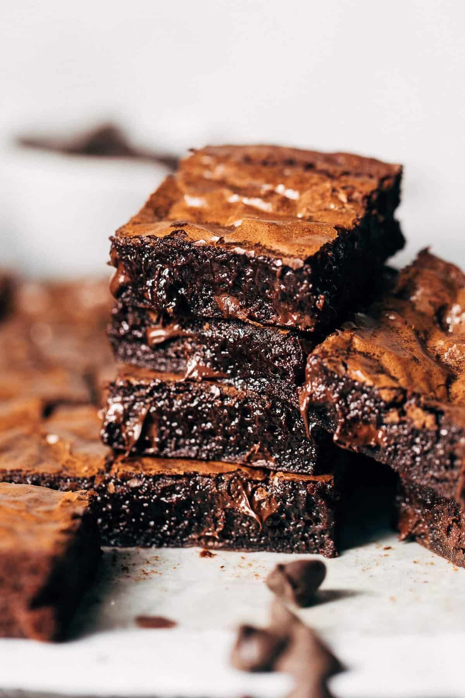

Brownies

Description
How to make the perfect brownies for any occasion!
Ingredients
- 5 tablespoons unsalted butter
- 1 1/4 cups granulated sugar
- 2 large eggs plus 1 egg yolk
- 1 teaspoon vanilla extract
- 1/3 cup vegetable oil
- 3/4 cup unsweetened cocoa powder
- 1/2 cup all-purpose flour
- 1/8 teaspoon baking soda
- 1 tablespoon cornstarch
- 1/4 teaspoon salt
- 3/4 cup semisweet chocolate chips
Steps
- Preheat the oven to 325°F. Line a 8 by 8-inch pan with foil or parchment paper and spray with nonstick cooking spray.
- In a microwave safe bowl, add the butter and sugar. Microwave for about 1 minute, or until the butter is melted. Whisk in the eggs, egg yolk, and vanilla. Stir in the oil and cocoa powder.
- With a rubber spatula, stir in the flour, baking soda, cornstarch, and salt until combined. Stir in the chocolate chips.
- Spread the brownie batter evenly into the prepared pan. Place in the oven and bake for 30 minutes, or until the brownies are set and a cake tester inserted into the center has moist crumbs attached. Do not overcook. Let cool completely before cutting and serving.
HOME